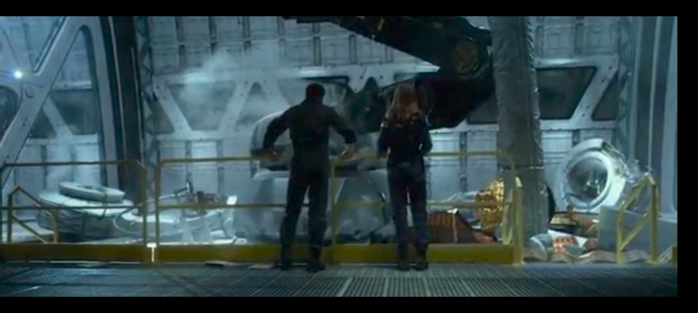

GEOSTORM ARTICLE
Set in the near future, Geostorm begins with Earth experiencing a series of catastrophic natural disasters. In response, an international coalition creates “Dutch Boy,” a network of satellites designed to control the climate and prevent such disasters. However, when the system starts to malfunction, causing deadly weather events, Jake Lawson is called back to fix the problem. Alongside his estranged brother Max (Jim Sturgess), Jake uncovers a conspiracy that threatens to unleash a “geostorm”—a chain reaction of extreme weather that could wipe out millions
MY FAVORITE SCENES OF GEOSTORM
1.It shows what prevents the various disasters that happen in earth
2.It shows the destruction that can be caused when dutchboy malfuctions
3.The first scene showing dutch boy had a malfuction in its code causing a mess

4.The first signings of the "Geostorm"

5.This was the scene when jake realized who was causing all the trouble in the dutchboy and who ordered the input of the virus